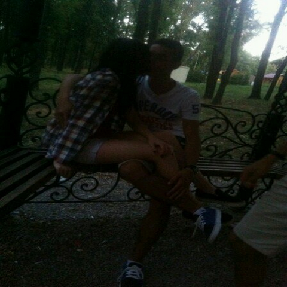

Как же всё было ?
А всё началось с тёплого летнего дня в 2016 году.Я в то время приехал в Донецк, после 2-х годового отсутствия.Мы с ребятами решили пойти на зелёнку (футбольная площадка), поиграть в футбол.Когда мы закончили играть, мы пошли гулять на район, но вдруг Фурик увидел своих подруг(Машу и Элю) вдалеке от нас, и тогда, взглянул на них со спины, я увидел ту, которая запала в душу.и ничего не предвешало бы беды, но меня она чем-то зацепила и я попался в её сети.
Следующим днём мы гуляли все большой компанией и к нам подошла она. Когда она шла к нам,ее бы никто не заметил, если бы она не держала в руке шарик с МакДональдса, который выдавал еёместоположение.Пообщавшись с ней, она оказалась очень весёлой личностью и мне всё больше и больше западала в душу.И с тех пор я стал всё больше и больше убеждаться, что она та самая, которая мне нужна. Погулявпримерно неделю, мы поцеловались...
Таких чувств у меня еще никогда не было и я был на седьмом небе от счастья, уверен, она тоже)
Но всё было бы хорошо, если бы я следующим днём не уехал в Крым, там я пробыл 2 недели. Послевозвращения с Крыма,я стал понимать, что совсем скоро всё исчезнет, то, чтоза небольшой период времени, стало моим маленьким миром, скоро пропадёт, ведь мне нужно быловозвращаться в Киев.
Каждый день я просыпался в 7-8 утра,делал дела и выходил гулять и ждал пока она выйдет. Невозвращался до 11 вечера, Вот так меня влекло к ней,что не хотелось возвращаться домой, а только быть с ней.

И вот настал тот самый день, последний день моего прибывание в Донецке, это был крах, я не хотелотпускать этого человека ни на метр от себя, а тутпредстоит быть на расстоянии сотен километров друг от друга и не было понятно на сколько всё этозатянется. Я её успокаивал, говорил,мол потерпи полгодика и я приеду, это не так уж и много. Я никогда так не ошибался...Уже по дороге в Киев, примерно после 30 минут, как мы тронулись, я уже понимал, что это будет самымсложным испытанием в моей жизни,ведь я уже тогда хотел просто выйти из автобуса и побежать к ней, но увы, я не мог этого сделать.
С первых дней нахождения в другом городе я тосковал и это была очень сильная тоска.Все мои мысли были только о ней.Это мешало мне сконсентрироваться на других делах и тогда я понял, что я зависим от неё.Она стала мои наркотиком, на который я подсел. У меня была ломка, а я стал полноценнымнаркоманом.
После 2-х месяцев, я понял, что пора что-то делать, потому что всё так продолжаться не может и яначал убеждать родителей вернуться в Донецк.Поначалу они были категорически против, но со временем начали сдавать свои позиции и я понимал, чтовот вот , и я смогу увидеть своё чудо.Я был очень настойчив, я уговаривал их, иногда даже доходило до ссор. Я говорил, что могу одинпоехать и сам заботится о себе.И тут, в один прекрасный момент, квартирантка, которая сдавала нам квартиру,решила, что ей нужна своя квартира и сказала,чтобы мы искали другую квартиру, вот тогда, все мои убеждения и моя настойчивость сыграли мне наруку. Мы решили вернуться в Донецк.
Это была победа для меня, самая настоящая победа.
И вот, мы вернулись, я встретился с ней, и моя душа была спокойна, как никогда.С тех пор, этот маленький клубочек счастья находится рядом со мной.
Да, были не приятные моменты, но сейчас мы вместе и это главное.
И сегодня, знаменательный день в наших жизнях, моей бубочке 18 годиков отроду ипоэтому я её от всей души поздравляю и желаю любить и быть любимой !!!